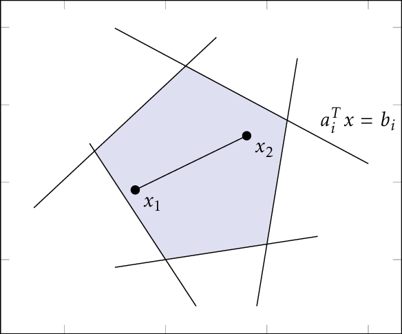
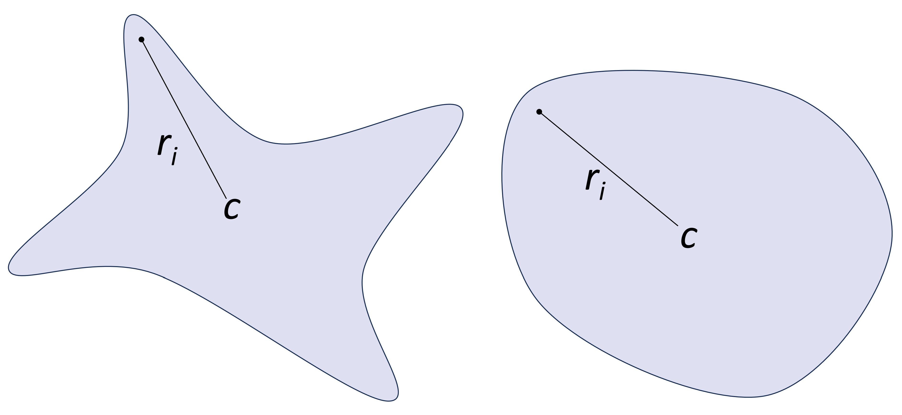

Input-Output Specification
Safety Property
A safety property is essentially an input-output relationship for the model we want to verify. In general, the constraints for the input set $\mathcal{X}$ and the output set $\mathcal{Y}$ can have any geometry. For the sake of simplicity, ModelVerification.jl uses convex polytopes and the complement of a polytope to encode the input and output specifications. Specifically, our implementation utilizes the geometric definitions of LazySets, a Julia package for calculus with convex sets. The following section dives into the geometric representations ModelVerification.jl uses and the representations required for each solver.
Geometric Representation
Different solvers implemented in ModelVerification.jl require the input-output specification formulated with particular geometries. We report here a brief overview of the sets we use. For specifics, please read Algorithms for Verifying Deep Neural Networks by C. Liu, et al. and Sets in LazySets.jl.
- HR =
Hyperrectangle - HS =
HalfSpace - HP =
HPolytope - SS =
StarSet - IS =
ImageStar - ZT =
Zonotope - PC =
PolytopeComplement - CH =
ConvexHull
| Solver | Input set | Output |
|---|---|---|
| Ai2 | ZT,SS,HP,HR | ReachabilityResult, CounterExampleResult |
| CROWN | ZT,SS,HP,HR,CH | BasicResult |
| $\alpha$-CROWN | ZT,SS,HP,HR,CH | BasicResult |
| $\beta$-CROWN | ZT,SS,HP,HR,CH | BasicResult |
| $\alpha$-$\beta$-CROWN | ZT,SS,HP,HR,CH | BasicResult |
| ImageZono | CH | ReachabilityResult, CounterExampleResult |
| ImageStar | CH | ReachabilityResult, CounterExampleResult |
Hyperrectangle (Hyperrectangle)
Corresponds to a high-dimensional rectangle, defined by
\[|x-c| \le r,\]
where $c\in\mathbb{R}^{k_0}$ is the center of the hyperrectangle and $r\in\mathbb{R}^{k_0}$ is the radius of the hyperrectangle.
HalfSpace (HalfSpace)
Represented by a single linear inequality constraint
\[a^\top x \le b,\]
where $a\in\mathbb{R}^{k_0}$ and $b\in\mathbb{R}$.
Halfspace-Polytope (HPolytope)
HPolytope uses a set of linear inequality constraints to represent a convex polytope, i.e., it is a bounded set defined using an intersection of half-spaces.
\[Ax \le b,\]
where $A\in\mathbb{R}^{k\times k_0}, b\in\mathbb{R}^k$ with $k$ representing the number of inequality constraints.

StarSet (Star)
Only convex star set is considered in this toolbox. A convex star set is an affine transformation of an arbitrary convex polytope,
\[x = c + \begin{bmatrix} r_1 & r_2 & \cdots & r_l \end{bmatrix} \alpha,\; C\alpha \le d,\]
where $c\in\mathbb{R}^{k_0}$ is the center of the star set, $r_i\in\mathbb{R}^{k_0},\; i\in\{1,\dots,l\}$ are generators of the star set, $C\in\mathbb{R}^{k\times l}$, $d\in\mathbb{R}^{k}$, $\alpha\in\mathbb{R}^l$ is the free parameter that belongs to a unit hypercube, and $k$ is the number of inequality constraints on $\alpha$. $l$ is the degree of freedom of the star set.
 The general starset, on the left, is not necessarily convex. We only consider convex starsets.
Zonotope (Zonotope)
Zonotope is basically as star set in which all predicate variables are in the range of $[-1, 1]$. Zonotope represents polytopes that can be written as affine transformations of a unit hypercube, defined as
\[x = c + \begin{bmatrix} r_1 & r_2 & \cdots & r_l \end{bmatrix} \alpha,\; |\alpha| \le 1,\]
where $c\in\mathbb{R}^{k_0}$ is the center of the zonotope, $r_i\in\mathbb{R}^{k_0},\; i\in\{1,\dots,l\}$ are generators of the zonotope, and $\alpha\in\mathbb{R}^l$ is the free parameter that belongs to a unit hypercube. $l$ is the degree of freedom of the zonotope.
ImageStar
ImageStar is an extension of the star set where the center and generators are images with multiple channels.
\[x = c + \begin{bmatrix} r_1 & r_2 & \cdots & r_l \end{bmatrix} \alpha,\; C\alpha \le d,\]
where $c\in\mathbb{R}^{h\times w \times k_0}$ is the center image, $r_i\in\mathbb{R}^{h \times w \times k_0},\; i\in\{1,\dots,l\}$ are the generator iamges, $C\in\mathbb{R}^{k\times l}$, $d\in\mathbb{R}^{k}$, and $h,w,k$ are the height, width, and number of channels (input dimension) of the images respectively. $\alpha\in\mathbb{R}^l$ is the free parameter that belongs to a unit hypercube, and $k$ is the number of inequality constraints on $\alpha$. $l$ is the degree of freedom of the star set.
ImageZono
ImageZono is an extension of the zonotope where the center and generators are images with multiple channels.
\[x = c + \begin{bmatrix} r_1 & r_2 & \cdots & r_l \end{bmatrix} \alpha\]
where $c\in\mathbb{R}^{h\times w \times k_0}$ is the center image, $r_i\in\mathbb{R}^{h \times w \times k_0},\; i\in\{1,\dots,l\}$ are the generator iamges, and $h,w,k$ are the height, width, and number of channels (input dimension) of the images respectively. $\alpha\in\mathbb{R}^l$ is the free parameter that belongs to a unit hypercube and $l$ is the degree of freedom of the zonotope.
PolytopeComplement (Complement)
PolytopeComplement is a type that represents the complement of a polytope, that is the set
\[Y = X^c = \{ y\in\mathbb{R}^n : y \notin X \}.\]
References
[1] C. Liu, T. Arnon, C. Lazarus, C. Strong, C. Barret, and M. J. Kochenderfer, "Algorithms for Verifying Deep Neural Networks," in Foundations and Trends in Optimization, 2021.
[2] T. Gehr, M. Mirman, D. Drashsler-Cohen, P. Tsankov, S. Chaudhuri, and M. Vechev, "Ai2: Safety and Robustness Certification of Neural Networks with Abstract Interpretation," in 2018 IEEE Symposium on Security and Privacy (SP), 2018.
[3] M. Forets and C. Schilling, "LazySets.jl: Scalable Symbolic-Numeric Set Computations," in Proceeds of the JuliaCon Conferences, 2021.
[4] HD. Tran, S. Bak, W. Xiang, and T.T. Johnson, "Verification of Deep Convolutional Neural Networks Using ImageStars," in Computer Aided Verification (CAV), 2020.
Spec
Specifications
ModelVerification.Spec — TypeSpecAbstract super-type for input-output specifications.
ModelVerification.InputSpec — TypeInputSpecInput specification can be of any type supported by LazySet or ImageConvexHull.
ModelVerification.OutputSpec — TypeOutputSpecOutput specification can be of any type supported by LazySet or LinearSpec.
The following are structures for specifications and construction functions for specifications.
ModelVerification.LinearSpec — TypeLinearSpec <: SpecSafety specification defined as the set $\{ x: x = A x - b ≤ 0 \}$.
Fields
A(AbstractArray{Float64, 3}): Normal dierction of sizespec_dim x out_dim x batch_size.b(AbstractArray{Float64, 2}): Constraints of sizespec_dim x batch_size.is_complement(Bool): Boolean flag for whether this specification is a complement or not.
ModelVerification.get_linear_spec — Methodget_linear_spec(batch_out_set::AbstractVector)Retrieves the linear specifications of the batch of output sets and returns a LinearSpec structure.
Arguments
batch_out_set(AbstractVector): Batch of output sets.
Returns
LinearSpecof the batch of output sets.
ModelVerification.ReLUConstraints — TypeReLUConstraintsA mutable structure for storing information related to the constraints of a ReLU (Rectified Linear Unit) activation function in a neural network.
Fields
idx_list: A list of indices.val_list: A list of values corresponding to the indices inidx_list.not_splitted_mask: A mask indicating which elements inidx_listandval_listhave not been split. This is used in the context of a piecewise linear approximation of the ReLU function, where the input space is split into regions where the function is linear.history_split: A record of the splits that have been performed.
ModelVerification.ReLUConstrainedDomain — TypeReLUConstrainedDomain <: SpecA mutable structure for storing specifications related to the ReLU (Rectified Linear Unit) activation function in a neural network.
Fields
domain: A geometric specification representing the domain of the ReLU function.all_relu_cons: A dictionary of ReLU constraints for each node in the network.
ModelVerification.ImageConvexHull — TypeImageConvexHull <: SpecConvex hull for images used to specify safety property for images. It is the smallest convex polytope that contains all the images given in the imgs array.
Fields
imgs(AbstractArray): List of images inAbstractArray. Image is represented as a matrix of height x weight x channels.
ModelVerification.ImageLinfBall — TypeImageLinfBallA mutable structure for storing information related to the constraints of a L-infinity ball for images.
Fields
lb: Lower bound of the ball.ub: Upper bound of the ball.
ModelVerification.get_image_linf_spec — Functionget_image_linf_spec(lb, ub, img_size)Given a lower bound lb, an upper bound ub, and the size of the image, returns a ImageZonoBound structure.
Arguments
lb: Lower bound of the image.ub: Upper bound of the image.img_size: Size of the image.
Returns
ImageZonoBoundstructure.
ModelVerification.classification_spec — Methodclassification_spec(n::Int64, target::Int64)Generates an output specification constructed with a convex polyhedron, HPolyhedron, for classification tasks. Given n-number of labels with target as the correct label, the resulting polyhedron is the finite intersection of halfspaces:
$P = \bigcap_{i=1}^n H_i$
where $H_i = \{x : a_i^T x \leq 0 \}, \; i\in\{1:n\}$ is a halfspace, $a_i$ is a row vector where the n-th element is 1.0, the target-th element is -1.0, and the rest are 0's.
Arguments
n(Int64): Number of labels.target(Int64): Target label.
Returns
HPolyhedronspecified as above such that the output specification captures the target label.
The following are helper functions for retrieving information the specification structures.
ModelVerification.get_size — Methodget_size(input_spec::LazySet)Given a LazySet, it determines the size.
ModelVerification.get_size — Methodget_size(input_spec::ImageConvexHull)Given an ImageConvexHull, it determines the size.